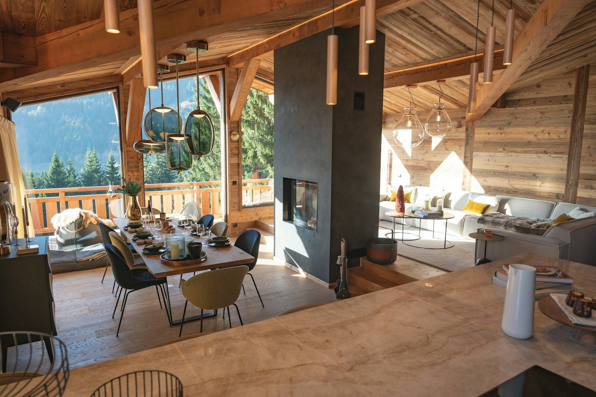

Reinigung für Ferienwohnungen und Gastgewerbe im Schwarzwald
Zwischen Check-out und Check-in machen wir Ferienwohnungen, Pensionen und kleine Hotels wieder gästefertig, auch am Wochenende und in der Hauptsaison.
- Wechselreinigung zwischen Check-out und Check-in
- Kurzer Fotobericht nach jedem Wechsel
- Einsätze auch am Wochenende
- Fester Ansprechpartner für Gastgeber

- Besichtigung kostenlos
- Antwort innerhalb von 24 Stunden
- Schriftliches Angebot mit Festpreis
- Deutsch, Türkçe, English
Warum Gastgeber ihre Wechselreinigung abgeben
Bei Ferienwohnungen gehört Sauberkeit zu den Punkten, die Gäste in Bewertungen besonders oft ansprechen. Ein Haar im Bad, Krümel in der Besteckschublade oder ein fehlendes Handtuch reichen schon für eine kritische Bemerkung. Gleichzeitig ist das Zeitfenster zwischen Abreise und Anreise oft nur wenige Stunden lang, und samstags wechseln in der Region viele Gäste gleichzeitig.
Wir übernehmen die komplette Wechselreinigung: Küche, Bad, Böden und Oberflächen, die Betten mit Ihrer Bettwäsche frisch beziehen, Handtücher auslegen, Inventar und Verbrauchsmaterial prüfen. Nach jedem Wechsel erhalten Sie einen kurzen Bericht mit Fotos, damit Sie auch aus der Ferne wissen, dass alles bereit ist. Schäden oder fehlende Gegenstände melden wir sofort.
Ob Ferienwohnung in Hinterzarten, Pension in Titisee-Neustadt oder kleines Hotel am Feldberg: Wir richten uns nach Ihrem Belegungsplan und arbeiten auch an Wochenenden und in der Hauptsaison. Zwischen den Saisons übernehmen wir auf Wunsch eine Grundreinigung, damit Polster, Fenster und Böden auch langfristig gepflegt bleiben.
Unser Leistungsumfang
Küche und Geschirr
Küche, Spüle, Kochfeld und Kühlschrank reinigen, Geschirr kontrollieren und sauber in die Schränke räumen.
Bad und WC
Dusche, Waschbecken, WC, Spiegel und Fliesen hygienisch reinigen, Haare und Kalkflecken gründlich entfernen.
Betten und Handtücher
Betten mit der Bettwäsche des Gastgebers frisch beziehen und Handtücher ordentlich für die nächsten Gäste auslegen.
Böden und Oberflächen
Saugen und Wischen aller Böden, Staubwischen der Oberflächen sowie Leeren und Trennen des Mülls.
Inventar und Verbrauchsmaterial
Kontrolle des Inventars sowie Auffüllen von Toilettenpapier, Seife, Spülmittel und Kaffee aus Ihrem Vorrat.
Fotobericht nach Wechsel
Nach jedem Einsatz senden wir Ihnen per WhatsApp oder E-Mail Fotos der fertigen Räume und melden Schäden oder Fehlbestände.
Schlüssel und Zugang
Wir arbeiten mit Schlüsseltresor, Codeschloss oder hinterlegtem Schlüssel und behandeln Codes und Schlüssel vertraulich.
Grundreinigung zwischen Saisons
In ruhigen Wochen reinigen wir Fenster, Schränke innen, Polster und Böden gründlich für die nächste Saison.
Für wen wir Ferienwohnungen und Gastbetriebe reinigen
- Vermieter von Ferienwohnungen
- Gastgeber auf Buchungsportalen
- Pensionen und Gästehäuser
- Kleine Hotels und Landgasthöfe
- Ferienhausvermittler und Agenturen
- Eigentümer, die nicht vor Ort wohnen
So läuft es ab
Anfrage starten- 1
Besichtigung
Wir sehen uns Ihre Unterkunft an und legen gemeinsam fest, was bei jedem Wechsel erledigt wird.
- 2
Checkliste
Aus Ihren Wünschen entsteht eine feste Checkliste für jede Wohnung, dazu ein schriftliches Angebot pro Wechsel.
- 3
Wechselreinigung
Nach Ihrem Belegungsplan reinigen wir zwischen Check-out und Check-in und richten alles für die neuen Gäste her.
- 4
Fotobericht
Nach jedem Einsatz erhalten Sie Fotos und einen kurzen Bericht mit allen Auffälligkeiten.
Was kostet die Reinigung einer Ferienwohnung?
Wir berechnen in der Regel einen Festpreis pro Wechsel. Wie hoch er ist, hängt von Größe, Ausstattung und Umfang ab.
Für Gastgeber mit mehreren Wohnungen oder ganzjähriger Betreuung erstellen wir gern ein Rahmenangebot.
Festpreis anfragen- Größe und Betten
- Wohnfläche, Zahl der Schlafplätze und Bäder bestimmen den Zeitaufwand pro Wechsel am stärksten.
- Leistungsumfang je Wechsel
- Ob nur gereinigt wird oder auch Inventar geprüft und Verbrauchsmaterial aufgefüllt wird, fließt in den Preis ein.
- Zeitfenster und Termine
- Sehr knappe Zeitfenster, Wochenendeinsätze oder mehrere Wechsel am selben Tag erfordern mehr Personal.
- Lage und Anfahrt
- Abgelegene Höfe und Höhenlagen im Winter bedeuten längere Anfahrtswege, die wir in die Kalkulation einbeziehen.
Im ganzen Schwarzwald für Sie da
Wir reinigen Ferienwohnungen und Gastbetriebe im gesamten Schwarzwald, unter anderem in Hinterzarten, Titisee-Neustadt, Feldberg, Triberg, Freudenstadt, Baden-Baden und Waldkirch.
Häufige Fragen
Waschen Sie auch Bettwäsche und Handtücher?
Nein, einen Wäscheservice bieten wir nicht an. Wir beziehen die Betten mit Ihrer sauberen Wäsche und legen die benutzte Wäsche gesammelt für Sie oder Ihre Wäscherei bereit.
Wie viel Zeit brauchen Sie für einen Wechsel?
Das hängt von Größe und Zustand ab. Eine typische Ferienwohnung schaffen wir in wenigen Stunden, sodass auch ein Check-in am Nachmittag nach einem Check-out am Vormittag möglich ist.
Arbeiten Sie auch am Wochenende und in der Hauptsaison?
Ja. Gerade samstags und in den Ferien finden viele Wechsel statt. Wir planen unsere Teams nach Ihrem Belegungsplan, auch früh morgens und abends.
Wie funktioniert die Schlüsselübergabe?
Wir arbeiten mit Schlüsseltresor, Codeschloss oder einem hinterlegten Schlüssel. Codes und Schlüssel behandeln wir vertraulich und nutzen sie nur für die vereinbarten Einsätze. Unser Betrieb ist zudem haftpflichtversichert.
Woher weiß ich, dass die Wohnung bereit ist?
Nach jedem Wechsel erhalten Sie per WhatsApp oder E-Mail Fotos der fertigen Räume und einen kurzen Bericht. Schäden, fehlende Gegenstände oder leere Vorräte melden wir sofort.
Übernehmen Sie auch eine Grundreinigung zwischen den Saisons?
Ja. In ruhigen Wochen reinigen wir Fenster, Schränke, Polster und Teppiche gründlich, damit die Unterkunft für die nächste Saison gepflegt ist.
Passende Leistungen

Teppich- und Polsterreinigung
Wir reinigen Teppichböden, Sofas, Sessel und Matratzen direkt bei Ihnen vor Ort per Sprühextraktion, gründlich bis in die Faser und schonend für das Material.
Mehr erfahren
Grund- und Umzugsreinigung
Wir reinigen Wohnungen und Häuser einmalig und gründlich, ob vor dem Einzug, nach dem Auszug oder nach einer Renovierung. So können Sie der Wohnungsübergabe gelassen entgegensehen.
Mehr erfahren
Glas- und Fensterreinigung
Wir reinigen Fenster, Wintergärten, Schaufenster und Glasfassaden streifenfrei, inklusive Rahmen und Falze, für Privathaushalte und Unternehmen.
Mehr erfahrenSagen Sie uns, was sauber werden soll.
Beschreiben Sie kurz Objekt und Leistung. Wir melden uns innerhalb von 24 Stunden mit einem Terminvorschlag.
- Telefon und WhatsApp
- +49 162 9763733
- Erreichbar
- Montag bis Samstag, 7 bis 19 Uhr
- Einsatzgebiet
- Schwarzwald und Umgebung